北九州市の街と自然の写真
写真アーカイブです。無料素材としてお使いいただけます。
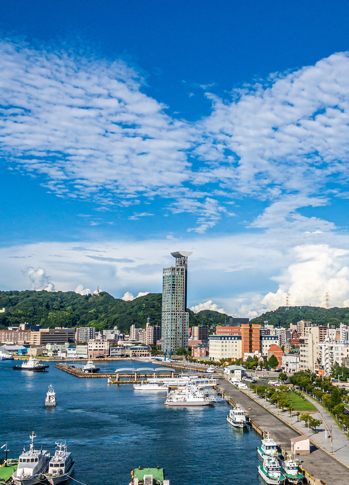
門司港 白野江植物公園
白野江植物公園
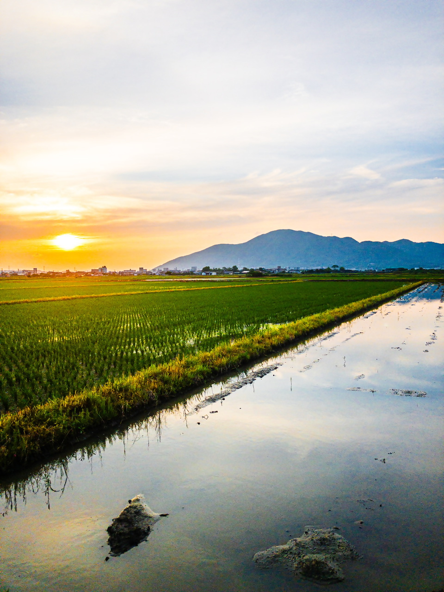
曽根新田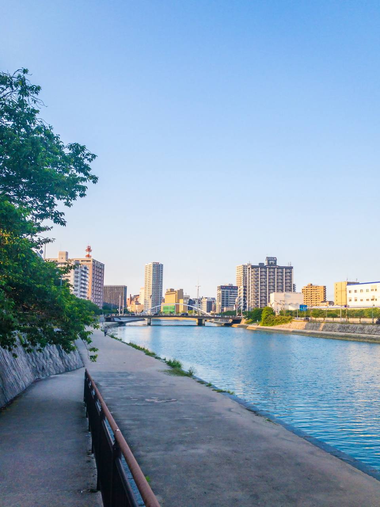
紫川 橋2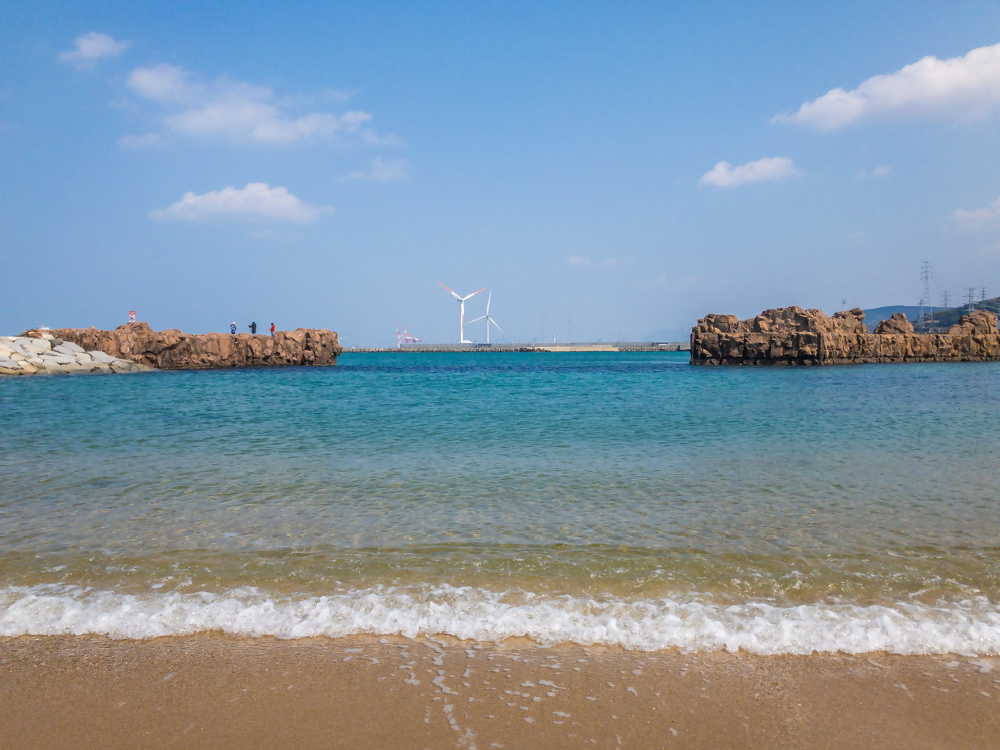
ひびき海の公園2 グリーンパーク
グリーンパーク
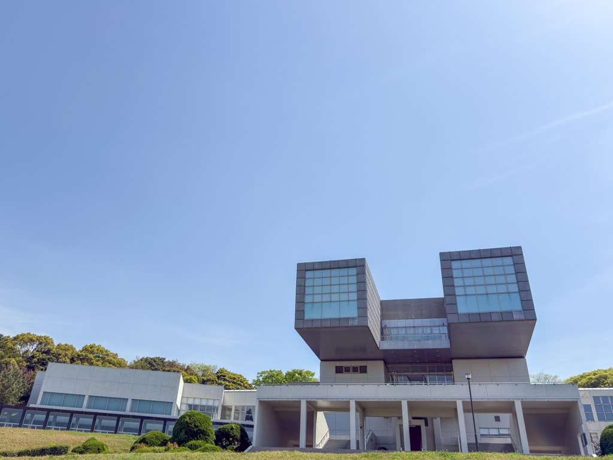
北九州市立美術館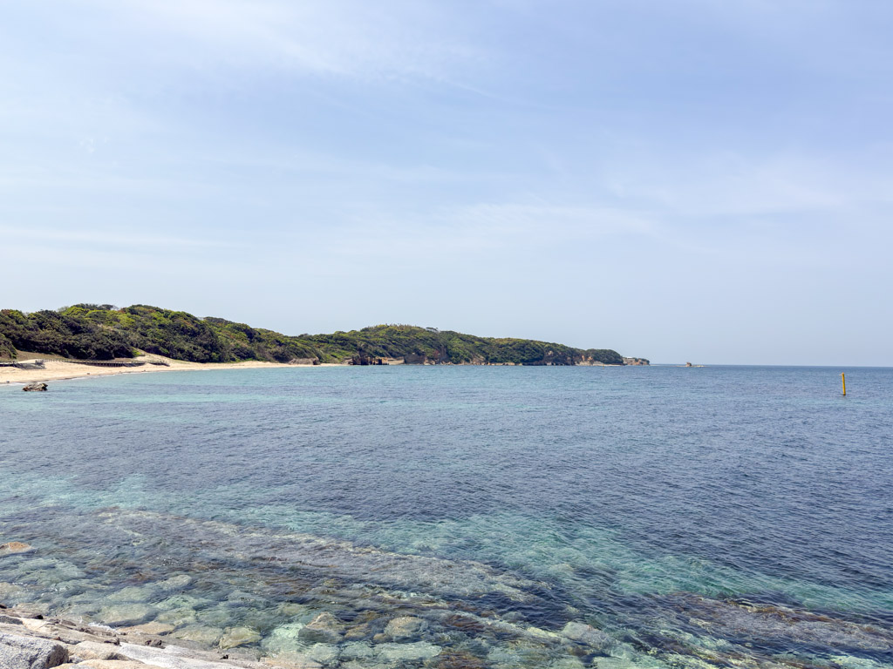
ひびき海の公園1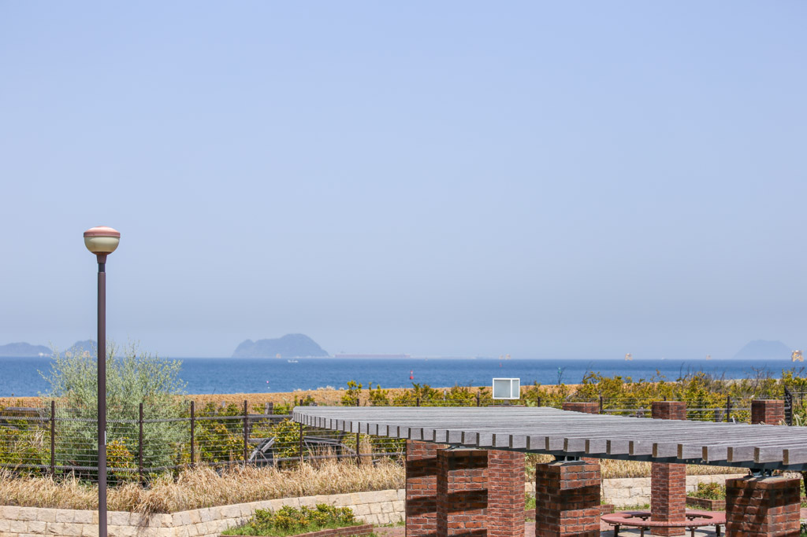
ひびき海の公園（フィッシャリーナ）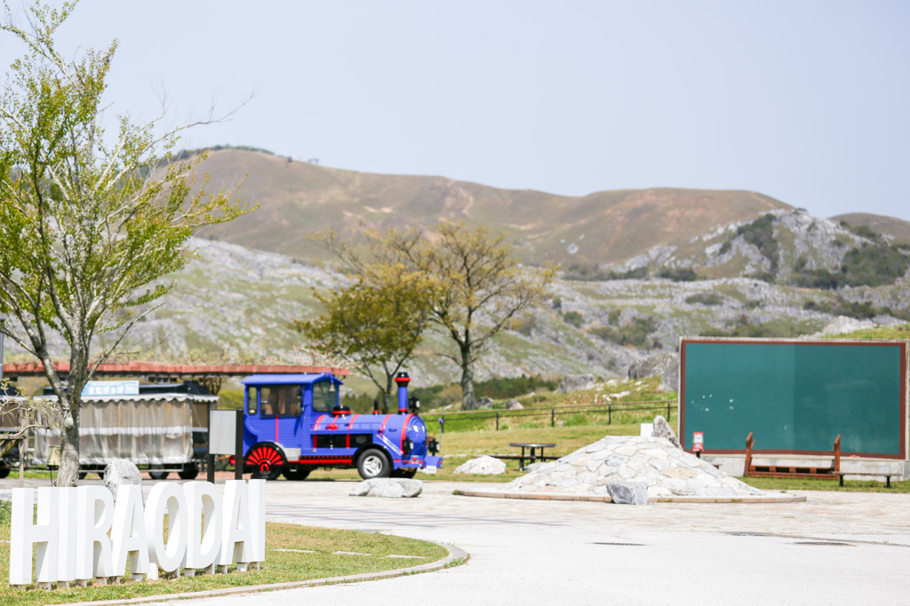
ソラランド平尾台 平尾台自然の郷 黒崎城跡 桜
黒崎城跡 桜
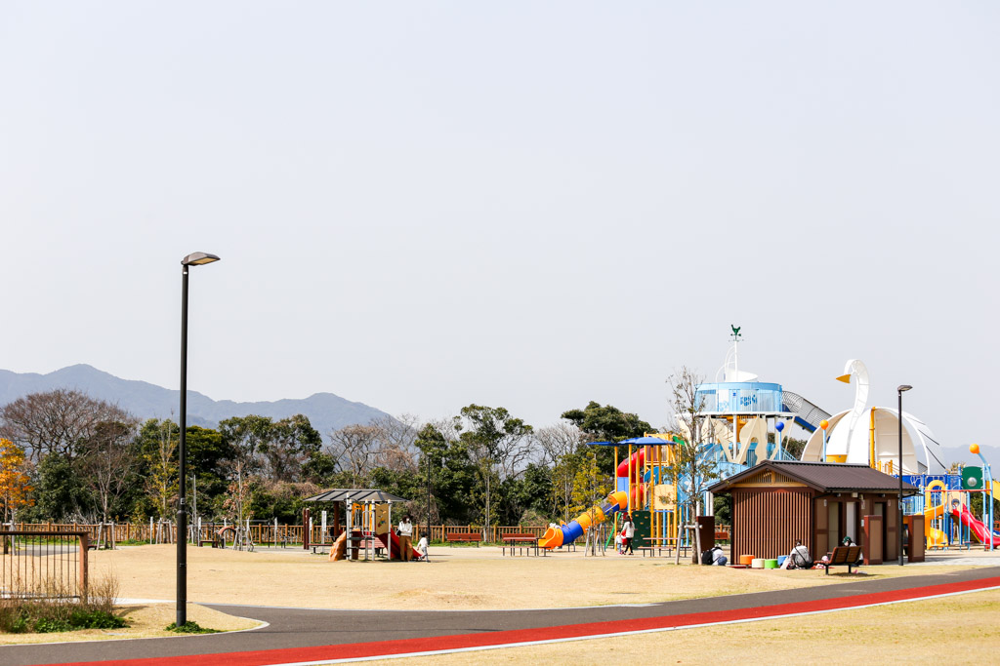
曽根東臨海スポーツ公園 花農丘公園 総合農事センター
花農丘公園 総合農事センター
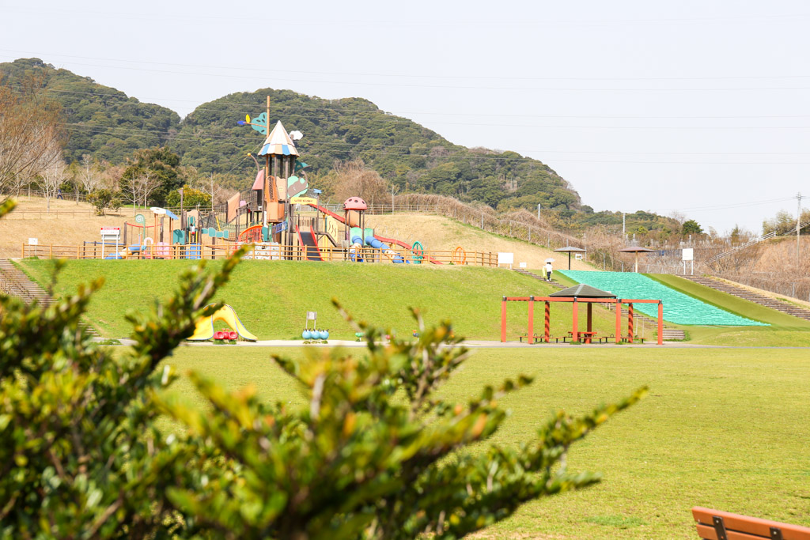
長野緑地 門司港 桜
門司港 桜
 小倉城 桜
小倉城 桜
 勝山公園 桜
勝山公園 桜
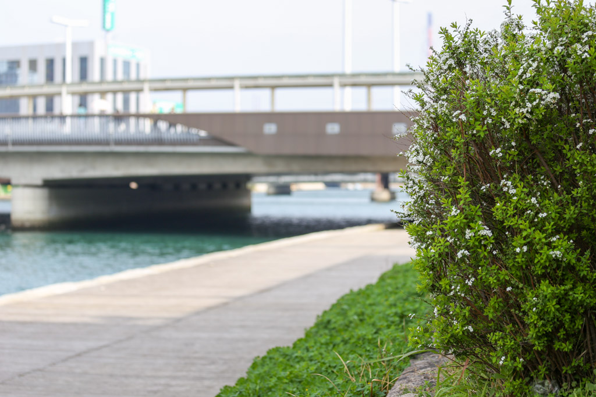
紫川 橋1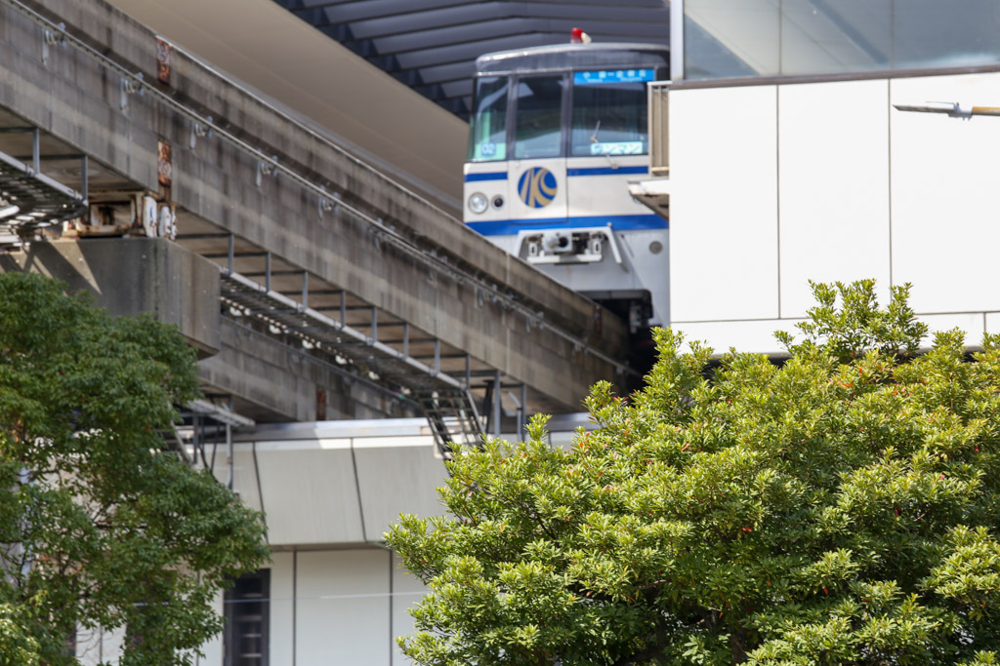
北九州モノレール あさの汐風公園 桜 噴水
あさの汐風公園 桜 噴水